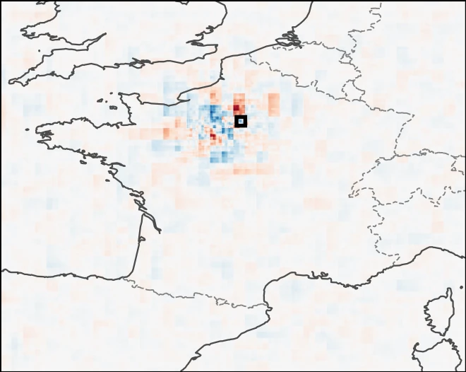
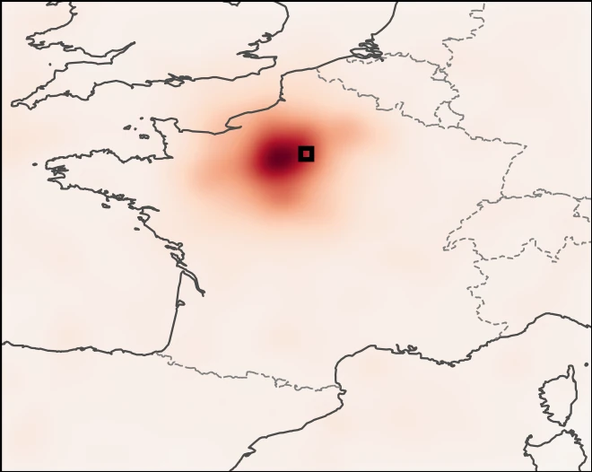
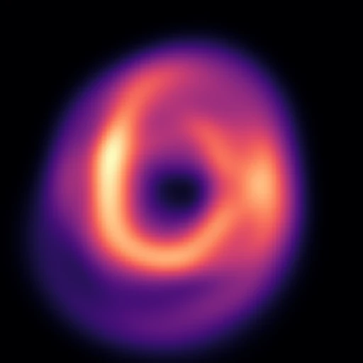
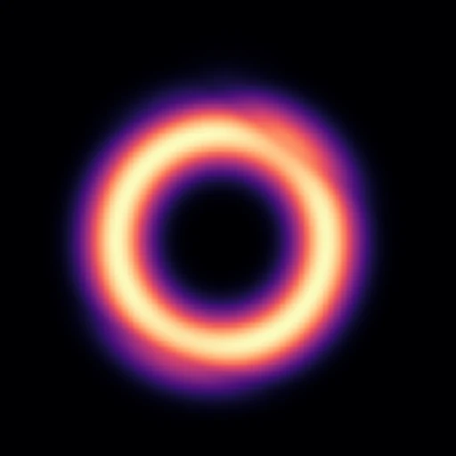

Publications All publications & talks
Noise doesn’t blur an explanation. It moves it.


≈ 115km
how far a gradient explanation drifts under small input noise at t + 5, while the forecast itself changes by less than 1.5 %.

